Sales journal
Process Sales journal in Batch Entry Mode
However, if there is a need for handwritten invoices, they can be captured in the Sales journal using the Batch entry mode.
For the purposes of the sales journal this topic, assume that you will be writing out your invoices manually for sales to your debtors (customers / clients). You simply need to capture the details such as the invoice number, date of the invoice, details of the services or goods sold, the amount and Tax (VAT/GST/Sales Tax) (if you are registered as a Tax (VAT/GST/Sales Tax) vendor) in the Sales journal.
|
|
The hand written invoices in this topic are only applicable to the selling of services and items, which does not constitute your trading stock items to debtors (customers / clients) on credit. In this case, you need to manually produce hand-written invoices, which are captured in the Sales journal. |

Example : Source documents - Invoices
Capture the following hand-written invoices:
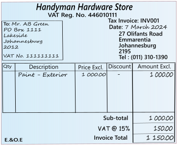
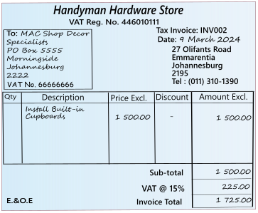
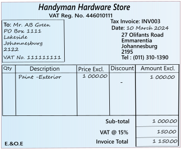
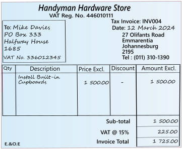
|
|
Using the Document entry, Invoices may be printed by osFinancials5/TurboCASH5, which will generate similar transactions as the Batch entry in the Sales journal. Using the documents feature to record sales transactions in the Sales journal, you do not have to write out hand written invoices as in this example. |
Capture your Invoices in the Sales journal
To enter your Sales transactions in the sales journal:
- On the Default ribbon, select Batch entry (F2).
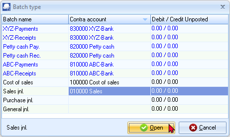
|
|
If no contra account is displayed on the "Batch type" selection screen, you need to set up the options for the batch. If you have not yet set the Sales journal, or if your requirements should change, click on the F10:Setup icon. |
- Select the “Sales jnl” and click on the Open button.
- Enter the Alias (batch name) and press the Enter key.
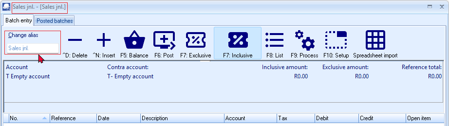
|
|
The Alias (Batch name) will help you if you need to identify a specific batch, to print a batch type report, if you wish to export posted batches to a file, etc. The alias (batch name) will also make it easier to identify the specific transactions in reports and various screens, and exported data. |
- Click F10:Setup to set the "Options for this batch". On the Standard tab, check the settings, and change, as required.
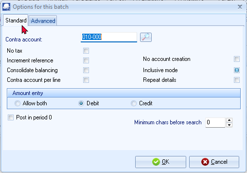
|
|
Note that for Invoices, the "Amount entry" field should be set to Debit. |

|
|
If you have a few credit notes, you may enter a negative (minus sign), followed by the amount in the credit column. These amounts will be transferred to the debit column. |
On the Advanced tab and check and take note of the settings.
|
|
If you have many credit notes to capture, you need to set the amount entry to debit in the setup options for the Sales journal, before entering credit notes in the Sales journal. Alternatively, you may enter the credit notes in the Sales returns journal. |
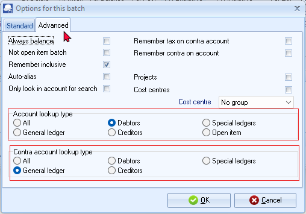
|
|
Select the “Debtor” option for the Account lookup type, since you only need to select “Debtor” option when you enter transactions for sales on credit to Debtors only. |
|
|
If you wish to allocate different transactions to different sales accounts, setup one contra account per line. |
|
|
The Tax report (Reports → Tax) does not include the Sales journal. It only includes Sales documents (i.e. Invoices an Credit notes). Transactions on other Batch types may cause similar errors. The reason for this, is the Consolidate balancing option on the Standard tab - F10:Setup on the Options for this batch screen. When setting up the batch, an information message will be displayed. "Consolidating lines and using tax will mess up your tax report! Please make sure you do not use tax or do not consolidate lines!" Click on the OK button and click on the F10:Setup icon and deselect (remove the tick) from the Consolidate balancing field on the Standard tab of the "Options for this batch" screen. Balance the batch again. |

- Once set up; click on the OK button.
- Capture the following hand-written invoices:
- After capturing all your invoices, the Batch entry screen for the Sales journal should reflect as follows:
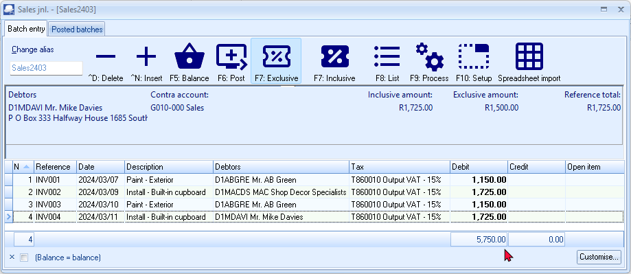
|
|
“F7: Inclusive” icon - Amounts in the bold font indicate that it is entered Inclusive of VAT/GST/Sales Tax. If the “F7: Exclusive” icon is displayed, the amounts are entered as Exclusive if VAT/GST/Sales Tax and will be displayed in the normal or regular font. |
|
|
You have now captured all your sales invoices for the month and may proceed with posting. |
Finalising the Sales journal
Once you have completed entering these invoices, and you are sure they are correct, you may proceed to finalise the batch. The recommended process, consists of the following steps:
- Balance the transactions entered in the sales journal.
- Print a list the transactions in the sales journal (after the journal is balanced).
- Post the transactions in the sales journal to the ledger.
Balance the sales journal
Balancing the transactions entered in a sales journal before posting to the ledger is an important step in maintaining accurate financial records for a business. Here are some reasons why:
- Accuracy: Balancing the transactions in the sales journal helps to ensure that the total debits and total credits are equal, which is the basic principle of double-entry accounting. This helps to minimize the risk of errors or discrepancies in the financial records.
- Efficiency: Balancing the sales journal before posting to the ledger can help to streamline the posting process by ensuring that all necessary information is complete and accurate. This can help to reduce the time and effort required to correct any errors or discrepancies that may arise later.
- Compliance: Balancing the transactions in the sales journal is a standard accounting practice and is often required by accounting regulations and standards. This can help to ensure compliance with legal and regulatory requirements.
- Verification: Balancing the transactions in the sales journal provides an opportunity to review and verify the accuracy of the recorded transactions. This can help to catch any errors or discrepancies that may have been made during the recording process.
Overall, balancing the transactions in a sales journal before posting to the ledger is an essential step in maintaining accurate financial records and ensuring compliance with accounting regulations and standards.
To balance the transactions entered in the sales journal:
Click on the F5:Balance icon. osFinancials5/TurboCASH5 will generate balancing entries. The balancing entries should reflect as follows:
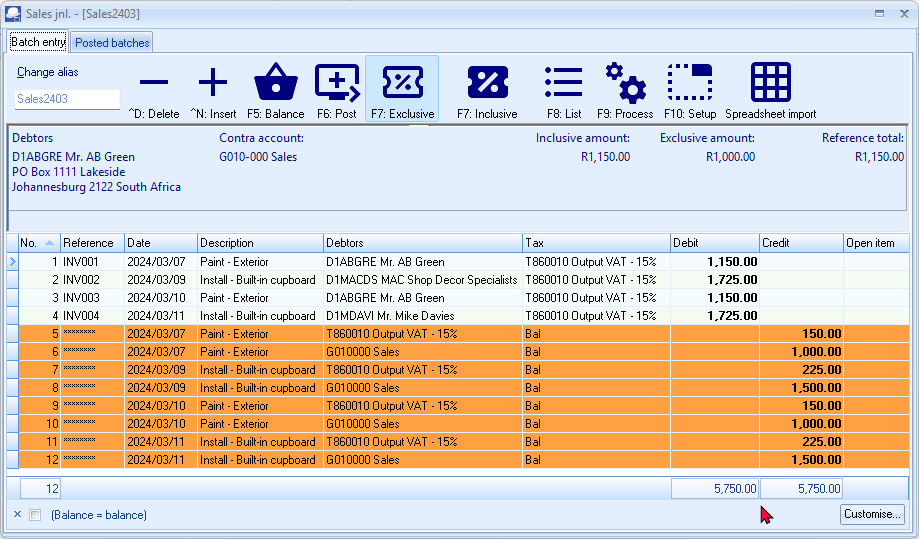
List the transactions in the Sales journal
Printing a list of transactions in a sales journal before posting to the ledger can be an important step in ensuring accurate financial records for a business. Here are some reasons why:
- Verification: Printing a list of transactions in the sales journal provides an opportunity to review and verify the accuracy of the recorded transactions before they are posted to the ledger. This helps to catch any errors or discrepancies that may have been made during the recording process. If you find any errors or discrepancies, you can make the necessary corrections in the sales journal before posting the transactions to the ledger. This can help ensure that the financial records are accurate and up-to-date, which is important for making informed business decisions.
- Organisation: Printing a list of transactions in the sales journal can help to organize and keep track of all the transactions that have been recorded. This can be useful in case there are any questions or disputes that arise regarding specific transactions.
- Audit trail: Printing a list of transactions in the sales journal can help to create an audit trail that can be used to track the flow of transactions from the source documents (such as sales invoices) to the ledger. This can be important for both internal and external audits.
- Reference: Printing a list of transactions in the sales journal can serve as a reference for future use. For example, if a customer calls with a question about a transaction, the sales journal can be used to quickly locate and review the relevant information.
Overall, printing a list of transactions in a sales journal before posting to the ledger can help to ensure accurate and organized financial records, which is important for the success and stability of any business.
To print a list of the transactions in the sales journal:
Click on the F8:List icon to print a list of the transactions in the sales journal.
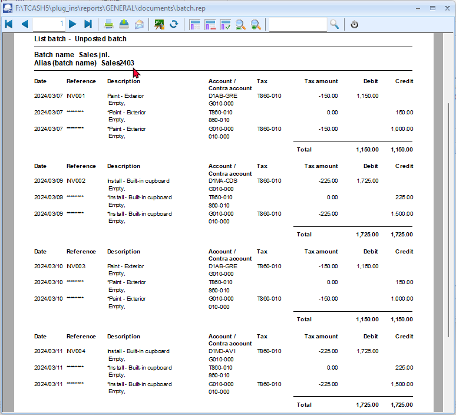
|
|
It is recommended that the source documents (e.g. sales invoices, etc.) be attached to this List of the transactions and that it be retained for record and audit purposes. You may also click on the |

Post the Sales journal to the Ledger
Click on the F6:Post icon, to post (update) the batch to the ledger.
Posting transactions from a sales journal to the ledger is an important accounting process that helps to ensure accurate financial reporting for a company. When these transactions are posted to the ledger, several things happen:
- The accounts affected by the transactions are updated: Each transaction in the sales journal represents a sale made by the company. When these transactions are posted to the ledger, the accounts affected by the sale, such as revenue or accounts receivable, are updated with the appropriate amounts.
- The ledger provides a complete record of transactions: By posting the transactions from the sales journal to the ledger, the ledger provides a complete record of all sales made by the company during the period. This information can be used to prepare financial statements and to analyze the company's financial performance.
- The accuracy of financial information is improved: Posting transactions to the ledger helps to ensure the accuracy of financial information. By keeping a complete and accurate record of all sales, the company can track its revenue and make informed business decisions based on the financial information.
- Adjusting entries can be made: Sometimes, errors are made in the sales journal that need to be corrected. When transactions are posted to the ledger, adjusting entries can be made to correct these errors and ensure the accuracy of the financial information.
In summary, posting transactions from a sales journal to the ledger is a crucial step in the accounting process. It helps to ensure the accuracy of financial information, provides a complete record of transactions, and allows for the preparation of financial statements that can be used to analyze the company's financial performance.
T-Account view
All processed (posted) transactions will be accumulated in the Ledger analyser. There are various ways in which the transactions may be viewed, exported and analysed.
To access the T-Account view of the transactions, do the following:
- On the Reports ribbon, select Ledger analyser1 or Ledger analyser 2.
- Select “Trial balance” report type and click on the Report button.
- On the “Trial balance”, select the “Sales” account.
- Double-click on the selected account; or right-click and select Show details on the context menu.
- Click on the following to get specific views of transactions:
- Batch number (e.g. 4 generated by osFinancials). This will list only the transactions for a specific batch (journal).
- Account code (e.g. G100-000 Sales, T850-010 Output VAT/GST/Sales Tax, D1MD-AVI Mr. Mike Davies, D1AB-GRE Mr. AB Green, DMA-SDS MAC Shop Decor Specialists). This will list the transactions for a selected account.
- Date – This will list the transactions for a specific date. If you double-click on a date, the 'From date' and 'To date' will be changed to the selected date.
After posting the transactions in the Sales journal, the transactions should display as follows in the T-Account viewer:
Batch View
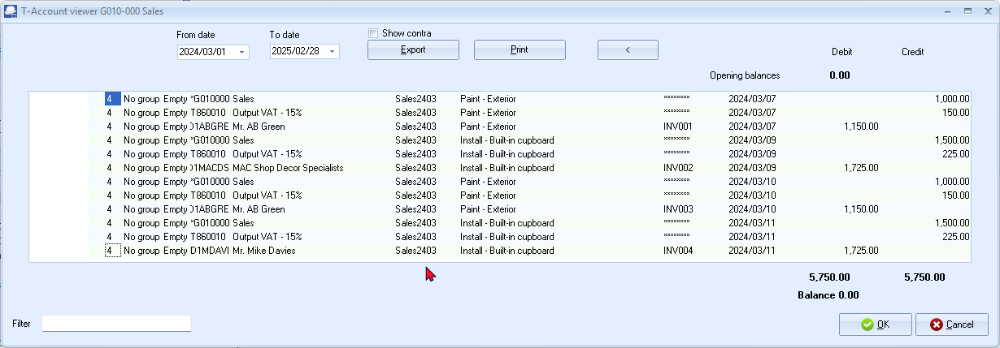
|
Account view Accounts in the Debtor’s ledger:
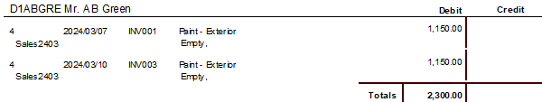
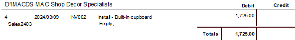
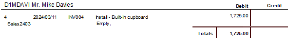 Accounts in the General ledger: Sales 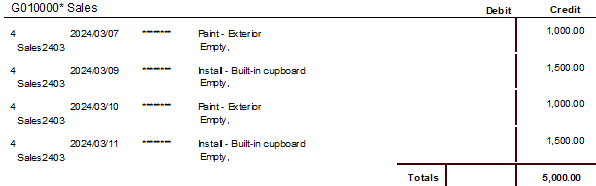
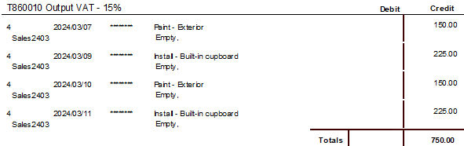 |


|
Accounting equation Debits = Credits Debit Debtor's ledger (i.e. individual = Credit General ledger (i.e. Sales account + |